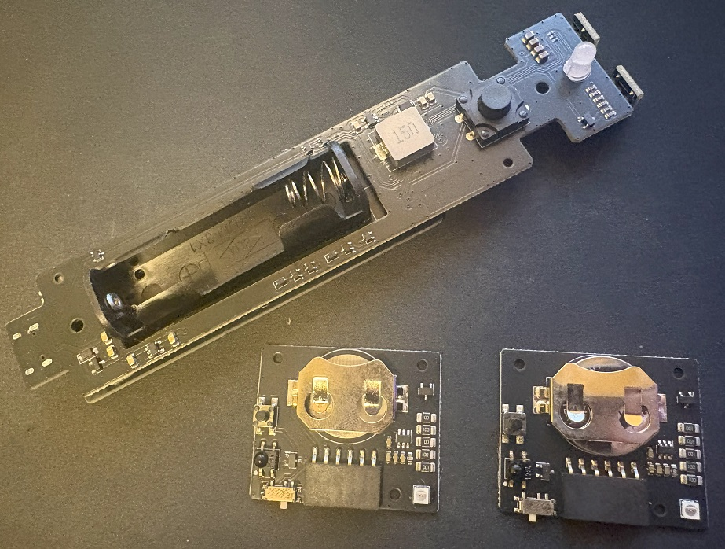

現場の課題を、
ハードウェアとソフトウェアで解決します。
アイティラボは、ハードウェア設計、組込みソフトウェア、Webシステム、スマホアプリ、クラウド連携、製品化まで一貫対応する技術開発会社です。
開発について相談する
アイティラボは、ハードウェア設計、組込みソフトウェア、Webシステム、スマホアプリ、クラウド連携、製品化まで一貫対応する技術開発会社です。
開発について相談する

メーカーサポート終了により運用継続が困難となった業務用ダーツマシンに対し、 独自開発基板による制御系置換を実施しました。

飲食店のキープボトル管理向けに、 独自開発した赤外線タグ技術を用いたボトル捜索システムを開発しました。
飲食店におけるキープボトル捜索の課題に対し、 独自開発した赤外線タグ技術を用いて、 低コストかつ高速なボトル捜索システムを開発しました。
BLEやRFIDといった一般的な物品捜索技術では、 大量タグ環境での瞬時検索や導入コストに課題がありました。 本システムでは、独自の赤外線タグ方式により、 店舗導入しやすいコストで目的のボトルを短時間で探し出せる構成を実現しています。
回路設計、基板設計、センサー制御、モーター制御、無線通信機器開発。
Raspberry Pi、ESP32、RP2040などを用いた機器制御、通信制御、表示制御。
管理画面、業務システム、スマホアプリ、API連携、遠隔監視、オンラインアップデート。
電子回路、組込みソフトウェア、Raspberry Pi、ESP32、RFID、IoT、製品開発など、 実際の開発で得た知見を順次公開していく予定です。